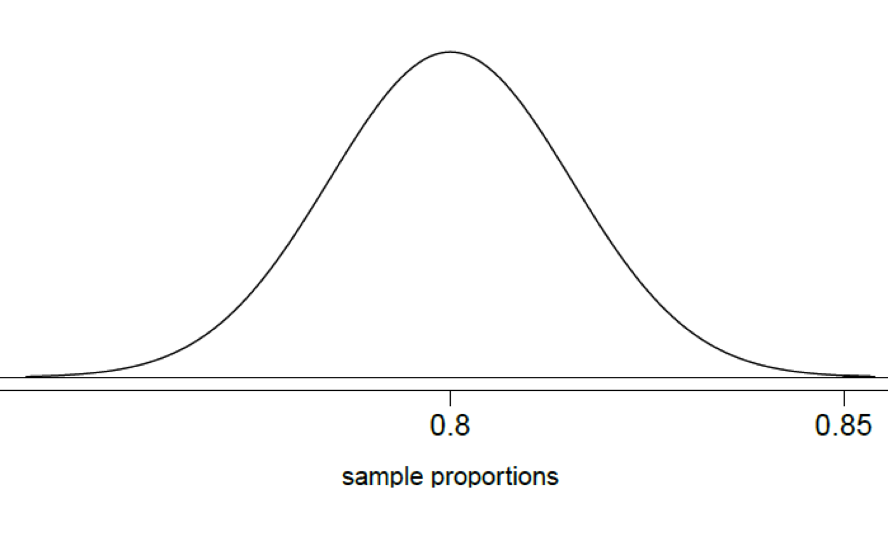

These notes use content from OpenIntro Statistics Slides by
Mine Cetinkaya-Rundel.
These notes use content from OpenIntro Statistics Slides by
Mine Cetinkaya-Rundel.
This section is a revisit of what we learned in Chapter 5.
Parameter \(p\) and point estimate \(\hat{p}\)
Central Limit Theorem for sample proportions
Parameter \(p\) and point estimate \(\hat{p}\)
Standard Error
Margin of Error (ME)
Confidence Interval (CI)
Hypothesis Testing (HT)
Sample Size
We would like to estimate the proportion of all Americans who have good intuition about experimental design, i.e. would answer “500 get the drug, 500 don’t”? What are the parameter of interest and the point estimate?
Parameter of interest: Proportion of all Americans who have good intuition about experimental design.
\[\mathbf{p} \ \text{(a population proportion)}\]
Point estimate: Proportion of sampled Americans who have good intuition about experimental design.
\[\hat{\mathbf{p}} \ \text{(a sample proportion)}\]
Central limit theorem for proportions Sample proportions will be nearly normally distributed with mean equal to the population proportion, \(p\), and standard error equal to \(\sqrt{\frac{p(1-p)}{n}}\).
But of course this is true only under certain conditions:
Independent observations;
At least 10 successes and 10 failures
Note: If \(p\) is unknown (most cases), we use \(\hat{p}\) in the calculation of the standard error.
\[{\textbf{point estimate} \mathbf{\pm} \textbf{ME}}\]
The margin of error is
\(\color{blue}{ME = critical\hspace{0.2cm} value \times standard \hspace{0.2cm} error}\) of the point estimate
The point estimate for proportions is \(\color{blue}{\hat{p}}\)
The critical value depends on the confidence level
Standard error of a sample proportion \(\color{blue}{SE_{\hat{p}}= \sqrt{\frac{p(1-p)}{n}} \sim \sqrt{\frac{\hat{p}(1-\hat{p})}{n}}}\)
The GSS found that 571 out of 670 (85%) Americans answered the question on experimental design correctly. Estimate (using a 95% confidence interval) the proportion of all Americans who have good intuition about experimental design?
Given: \(n = 670, \hat{p} = 0.85\). First, check conditions.
Independence: The sample is random, and 670 < 10% of all Americans, therefore we can assume that one respondent’s response is independent of another.
Success-Failure: 571 people answered correctly (successes) and 99 answered incorrectly (failures), both are greater than 10.
We are given that \(n = 670, \hspace{0.2cm} \hat{p}= 0.85\), the standard error of the sample proportion is \(SE = \sqrt{\frac{p(1-p)}{n}} \sim \sqrt{\frac{\hat{p}(1-\hat{p)}}{n}}\). Which of the below is the correct calculation of the 95% confidence interval?
\({0.85} \pm 1.96 \times \sqrt{\frac{0.85 \times 0.15}{670}} \rightarrow \color{red}{(0.82, 0.88)}\)
\(0.85 \pm 1.65 \times \sqrt{\frac{0.85 \times 0.15}{670}}\)
\(0.85 \pm 1.96 \times \frac{0.85 \times 0.15}{\sqrt{670}}\)
\(571 \pm 1.96 \times \sqrt{\frac{571 \times 99}{670}}\)
How many people should you sample in order to cut the margin of error of a 95% confidence interval down to 1%?
\[ME = z_{\frac{\alpha}{2}} \times SE\] \[ \begin{align*} 0.01 &\geq 1.96 \times \sqrt{\frac{0.85 \times 0.15}{n}}\color{red}{\rightarrow \text{Use } \hat{p} \text{ from previous study}}\\ 0.01^2 &\geq 1.96^2 \times \frac{0.85 \times 0.15}{n}\\ n &\geq \frac{1.96^2 \times 0.85 \times 0.15}{0.01^2}\\ n &\geq 4898.04 \color{red}{\rightarrow \text{n should be at least 4,899}} \end{align*} \]
Use \[M.E = z_{\frac{\alpha}{2}} \sqrt{\frac{p(1-p)}{n}} \rightarrow \frac{M.E}{z_{\frac{\alpha}{2}}} = \sqrt{\frac{p(1-p)}{n}}\]
\[\big({ \frac{M.E}{z_{{\alpha}/2}}}\big)^2 = {\frac{p(1-p)}{n}} \rightarrow n = \frac{p(1-p)}{\big({ \frac{M.E}{z_{\frac{\alpha}{2}}}}\big)^2}\]
\[n= {\frac{p(1-p)z^2_{\frac{\alpha}{2}}}{(M.E)^2}}\] So to control the ME under the specified level, take
\[ n \ge {\frac{p(1-p)z^2_{{\alpha}/2}}{(M.E)^2}}\] (i.e., take the ceiling integer)
The general sample size formula is: \[ n \ge {\frac{p(1-p)z^2_{{\alpha}/2}}{(M.E)^2}}\]
When we have no value for \(p\) from a previous study nor \(\hat{p}\), we use \(p=0.5\).
This is because the function \(f(p) = p(1-p)\) for \(0≤𝑝≤1\) reaches its maximum at \[p =\frac{1}{2}, f(\frac{1}{2}) = \frac{1}{4}\]
Substituting \(p=\frac{1}{2}\) in the general formula above gives
\[n \ge {\frac{z^2_{{\alpha}/2}}{4(M.E)^2}}\]
Success-Failure conditions:
Standard error:
CI: Calculate using observed sample proportion: \(SE = \sqrt{\frac{\hat{p}(1-\hat{p})}{n}}\).
HT: Calculate using the null value: \(SE = \sqrt{\frac{p_0(1-p_0)}{n}}\)
The GSS found that 571 out of 670 (85%) Americans answered the question on experimental design correctly. Do these data provide convincing evidence that more than 80% of Americans have a good intuition about experimental design?
Solution
\(H_0: p = 0.80 \hspace{1.5cm} H_a: p>0.80\)
\(p_0=0.80, 𝑛=670, n𝑝_0=536>10,𝑛(1−𝑝_0 )=134>10\)
\(SE = \sqrt{\frac{p_0(1-p_0)}{n}}= \sqrt{\frac{0.80(1-0.80}{670}} = 0.01545\)
If \(H_0\) were true, then \(\hat{p} \sim N(0.80,0.01545)\).
\(Z= \frac{0.85-0.80}{0.01545} = 3.2362\)
P-value = \(𝑃(\hat{p}>0.85)= 1-0.9994 = 0.0006\)

Since the p-value is low, we reject \(H_0\). The data provide convincing evidence that more than 80% of Americans have a good intuition on experimental design.
Popular parameter: \(p\). point estimate: \(\hat{p}\)
Conditions:
Standard error: \(SE = \sqrt{\frac{p(1-p)}{n}}\)